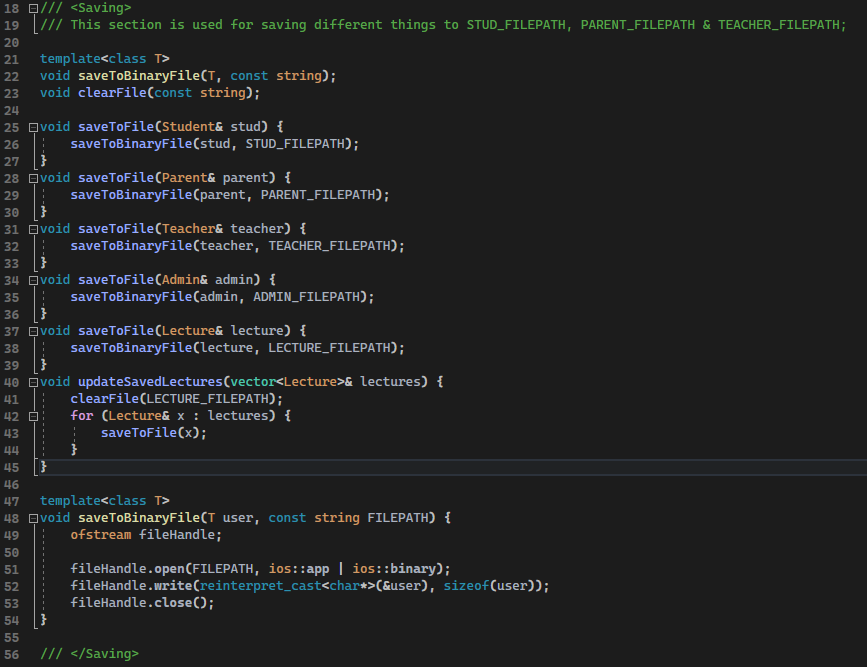
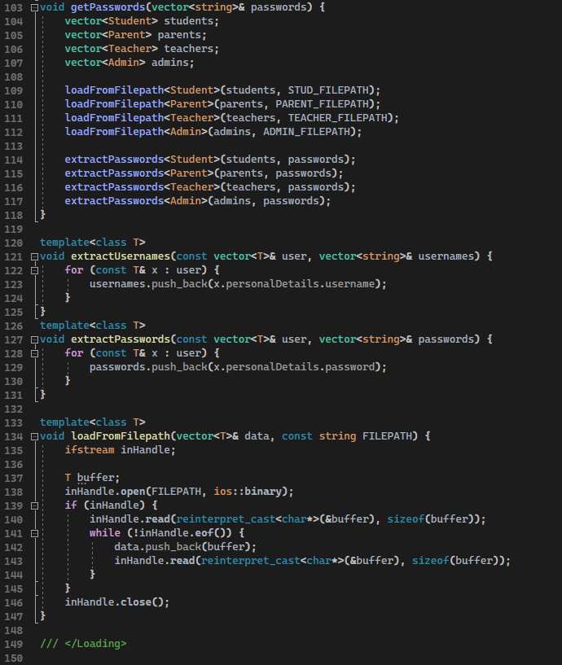
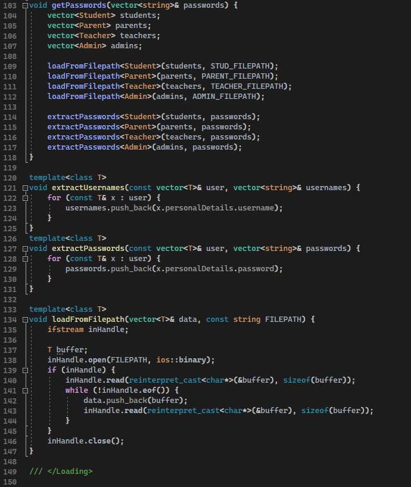

School Administration system,
made with C++ to be run on a Command Terminal
Made by Lukas Skaane & Mohammed Sanahul
What I learnt
I learnt a lot about C++ from this project. I had never worked with pointers and references, and it was something I found intuitive and fun. Because I had a background in a similar language I could pick up C++ rather quickly, and could focus on more advanced features of the language.Explanation
I wanted a system to handle saving & loading neatly, so I spent some time over-engineering all of it. The result is a set of functions that can save any type of object, with just two lines of code. The saving is the easy part, turning the binaries back into objects was slightly harder, and it's done by separating whether the caller wants usernames, passwords or every object related to one of the groups, namely Students, Parents, Teachers, Admins or Lectures.
 
